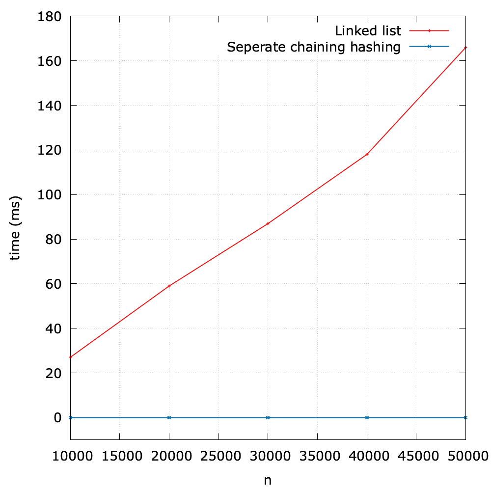

Hash Tables
The downside of direct addressing is apparent: if the universe U is large or infinite, storing a table T of size |U| may be impractical, or even impossible, given the memory available on a typical computer. Furthermore, the set K of keys actually stored may be so small relative to U that most of the space allocated for T would be wasted.
With direct addressing, an element with key k is stored in slot k, but with hashing, we use a hash function h to compute the slot number from the key k, so that the element goes into slot h(k). The hash function h maps the universe U of keys into slots of a hash table T[0:m-1]:
\[h: U \rightarrow \{0, 1, \dots, m - 1\}\]
where the size m of the hash table is typically much less than |U|. We say that
- an element with key k hashes to slot h(h)
- h(k) is the hash value of key k

There is one hitch, namely that two keys may hash to the same slot. For example, keys \(k_2\) and \(k_5\) map to the same slot. We call this situation a collision.
Therefore, when it comes to hashing, we need to care about two components:
- hash function: convert keys into array indices
- collision resolution: handle the case when two or more keys are mapped to the same index.
In this section, we focus on the second component.
Collision resolution: separate chaining
A simple hash function
As for a positive integer, a straightforward, but not particularly good, way is to adopt the modular operation:
\[h(k) = k \ mod \ m\]
For example, suppose m = 10, then h(1) = h(111) = 1, h(8) = 8.
Hashing with separate chaining
The input set of n elements is divided randomly into m subsets, each of approximate size n/m. A hash function determines which subset an element belongs to. Each subset is managed independently as a list.

Let's take the simple modular hash function as the example, and suppose that the key is a positive integer. The figure above shows the idea behind chaining: each nonempty slot points to a linked list, and all the elements that hash to the same slot go into that slot's linked list. Thus, the hash table T can be represented as an array of (singly or doubly) linked lists with size of m.
In what follows, we assume that a linked list is adopted1. But in fact, data structures that store the separate chains are not limited to a linked list, and user can also choose:
- a resizing array
- a self-balancing BST (e.g., red-black tree)
Analysis
How well does hashing with chaining perform? In particular, how long does it take to search for an element with a given key? Given a hash table T with m slots that stores n elements, we define load factor \(\alpha\) for T as n/m, that is, the average number of elements stored in a chain.
- The worst case: all n keys hash to the same slot, creating a list of length n. The worst-case time for searching is \(O(n)\) plus the time to compute the hash function. We clearly don't use hash tables in this case.
- The average case: It depends on how well the hash function h distributes the keys, and we will discuss it in detail later. For now, we assume that any given element is equally likely to hash into any of the m slots. Setting aside the \(O(1)\) time required to compute the hash function. In this case, a search takes \(O(1 + \alpha)\) time on average.
By the default, Java's implementation choose \(\alpha = 0.75\).
Implementation and evaluation
First, we design an implementation for symbol table based on a linked list. Then the separate chaining hash maintains:
- an array of linked lists
m: the size of the slotsn: the number of the key-value pairs
The complete code can be found at SeparateChainingHash.java and separate_chaining_hash.py.
A few notes on Python
To return all keys of a linked list as an iterable object, we can use yield:
def keys(self):
x = self._first
while x is not None:
yield x.key
x = x.next
Evaluation
To evaluate the performance, I designed an experiment to compare an elementary symbol table based on a linked list and that based on the separate chaining hashing.
As we can see, it shows the great superiority of the hashing method.
1 Generally, we set parameters so as to make the number of keys hashing to each value small, and linked list tables are generally better for small tables.